| 植物编号 | 植物图片 | 中文名 | 拉丁学名 | 科属 | 生活型 | 原产地 | 地理分布 | 类群 | 形态特征 | 生态习性 | 入侵危害/特点 | 分布区域 | 出现次数 |
|---|---|---|---|---|---|---|---|---|---|---|---|---|---|
| 1 | 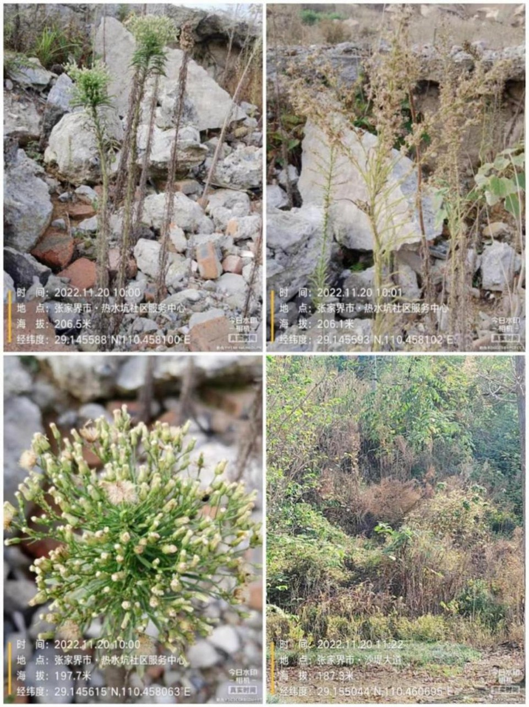 |
小蓬草 | Conyza canadensis | 菊科白酒草属 | 一年生草本 | 北美洲 | 世界分布 | 被子植物 | 叶倒披针形，基部渐狭成柄，边缘具疏锯齿或全缘，两性花淡黄色 | 喜光照，耐干旱贫瘠，适应性强，繁殖速度快 | 该植物可产生大量瘦果，蔓延极快，对秋收作物、果园和茶园危害严重，通过分泌化感物质抑制邻近其他植物的生长。该植物是棉铃虫和棉蝽象的中间宿主，其叶汁和捣碎的叶对皮肤有刺激作用 | 热水坑社区服务中心附属绿地，太极溪特大桥防护绿地，市公安局交通警察大队附属绿地，沙堤大道防护绿地，张家界金海学校附属绿地、大堰附属绿地，人民医院附属绿地，西站附属绿地，武陵山大道防护绿地，大溶溪防护绿地。 | 16 |
| 2 | 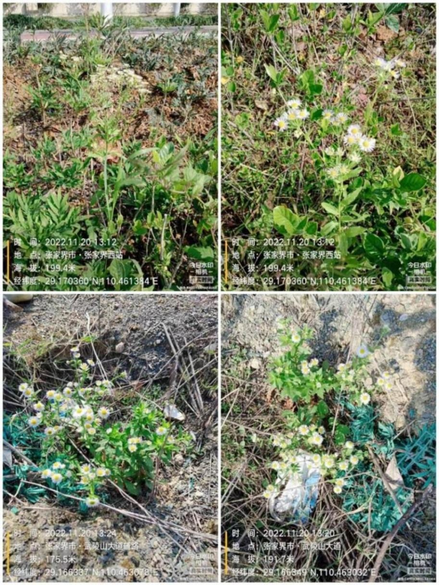 |
一年蓬 | Erigeron annuus (L.) Pers. | 菊科飞蓬草属 | 一年生草本 | 北美洲 | 东亚和北美间断分布 | 被子植物 | 上下部被硬毛，边缘具粗齿。基部叶长圆形或宽卵形，中部和上部叶长圆状披针形或披针形。头状花序排列成圆锥花序。 | 喜温暖湿润，也能耐寒、耐旱；适应能力极强，既能耐阴也能在全光照下生长，在阳光充足的地方会长得更加旺盛 | 繁殖系数大，扩散速度快，发生量大。是红蜘蛛的越冬寄主，而红蜘蛛是一种农田害虫，易引起作物病虫害。对其他物种具有化感作用，可抑制水稻等作物胚轴和根的生长。与本土植物争水、争肥、争夺生存空间，爆发扩散时往往形成单优种群，破坏原有生态系统，影响生物多样性。 | 大堰防护绿地、人民医院附属绿地、西站附属绿地、武陵山大道防护绿地、龙源华城附属绿地、张家界金海学校附属绿地、大庸桥公园绿地、荣盛华府附属绿地、大庸古城附属绿地、福天·中央公馆附属绿地、福天·中央公馆附属绿地、科技大道防护绿地、陈家溪桥防护绿地、仙人溪桥防护绿地、迎宾路防护绿地、官黎坪中学附属绿地、南庄坪街道办事处附属绿地 | 30 |
| 3 | 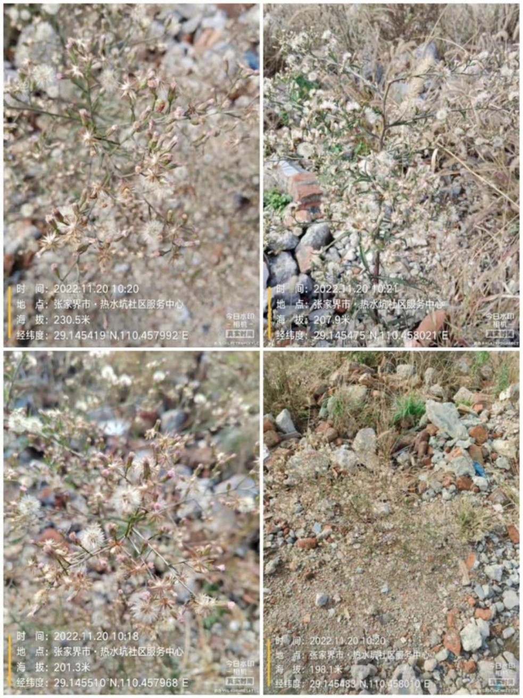 |
钻叶紫苑 | Symphyotrichum subulatum (Michx.) G. L. Nesom | 菊科紫苑属 | 一年生草本 | 北美洲 | 东亚和北美间断分布 | 被子植物 | 茎和分枝具粗棱，茎生叶多数，叶片披针状线形，瘦果线状长圆形，雌花花冠舌状，两性花花冠管状。生长在海拔1100-1900米的山坡灌丛中、草坡、沟边、路旁或荒地。 | 喜好阳光充足，以及温暖湿润的肥沃壤土。极强的环境适应性（耐旱、耐贫瘠、喜湿且耐盐碱）和高效的繁殖与扩散能力（通过冠毛随风传播大量种子） | 可产生大量瘦果，果具冠毛随风散布入侵。具有较强的耐盐碱性，在弱碱性土壤可以健壮成长，并形成单一优势群落。在自然条件下土壤中含有较多的钻叶紫菀残株时，它对小麦、绿豆、油菜的萌发与生长具有明显的抑制作用。 | 市人民政府附属绿地、仙人溪桥防护绿地、天门小学附属绿地、华天金街防护绿地、迎宾路防护绿地、江与城附属绿地 | 25 |
| 4 | 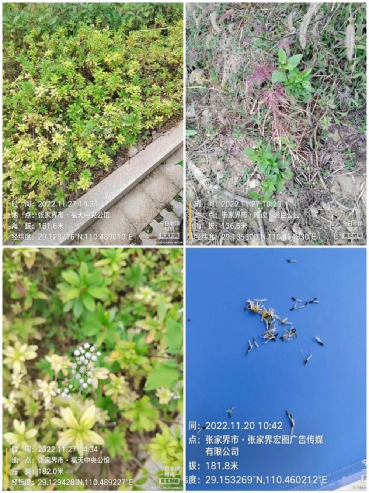 |
藿香蓟 | Ageratum conyzoides | 菊科藿香蓟属 | 一年生草本 | 美洲 | 热带亚洲至热带非洲分布 | 被子植物 | 全部茎枝淡红色，或上部绿色，被白色尘状短柔毛或上部被稠密开展的长绒毛。叶为基出三脉或不明显五出脉，顶端急尖，边缘圆锯齿，两面被白色稀疏的短柔毛且有黄色腺点。头状花序4-18个在茎顶排成通常紧密的伞房状花序。 | 喜暖忌热、耐贫瘠，凭借风播种子和化感作用成为恶性入侵杂草。 | 生命力顽强 | 太极溪特大桥防护绿地、张家界学院附属绿地、逸臣公园附属绿地、逸臣桃源附属绿地、福天·中央公馆附属绿地 | 3 |
| 5 | 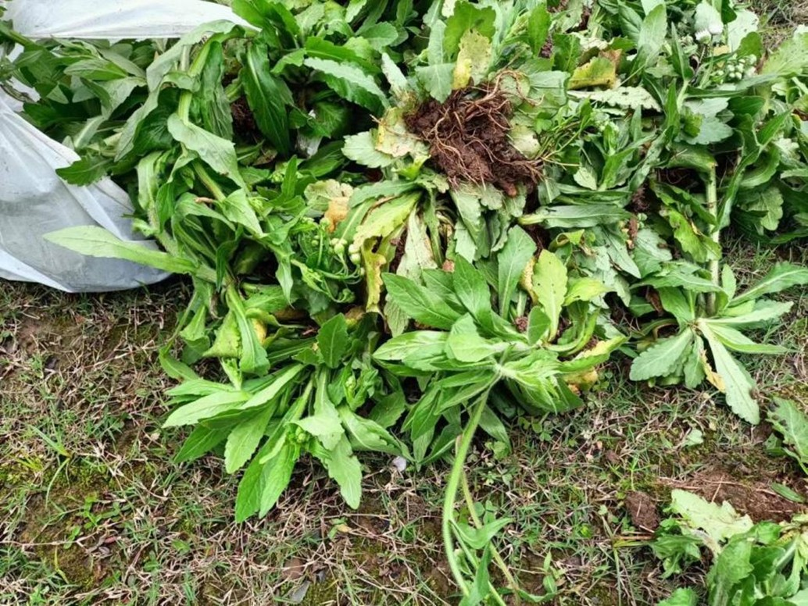 |
春飞蓬 | Erigeron philadelphicus L. | 菊科飞蓬属 | 一年生或多年生草本 | 北美洲 | 北温带分布 | 被子植物 | 茎直立，绿色，上部有分枝，全株被开展的长或短硬毛。单叶互生；基生叶莲座状，匙形、卵形或卵状倒披针形，顶端急尖或钝，基部楔形下延成具翅长柄，叶柄基部常带紫红色，两面被倒伏的硬毛，叶缘具粗齿，花期存在；茎生叶半抱茎；中上部叶披针形或条状线形，顶端尖，基部渐狭无柄，边缘有疏齿，被硬毛。头状花序数枚，蕾期伏倾，花期斜举，排列成伞房或圆锥状花序；总苞半球形，总苞片3层，披针形，淡绿色，边缘半透明，中脉褐色，背面被毛；缘花舌状，2轮，雌性，舌片线形，平展，白色略带粉红色；管状花两性，黄色。小瘦果披针形，压扁，被疏柔毛；雌花瘦果具冠毛1层，极短而连接成环状膜质小冠；两性花瘦果具冠毛2层，外层鳞片状，内层糙毛状，长约2毫米，10-15条。 | 喜阳光充足、土壤肥沃的环境，凭借强大的繁殖和传播能力、对环境的广泛适应性和化感作用 | 常见杂草，影响景观环境效果。 | 阳湖坪工业园附属绿地等 | 21 |
| 6 | 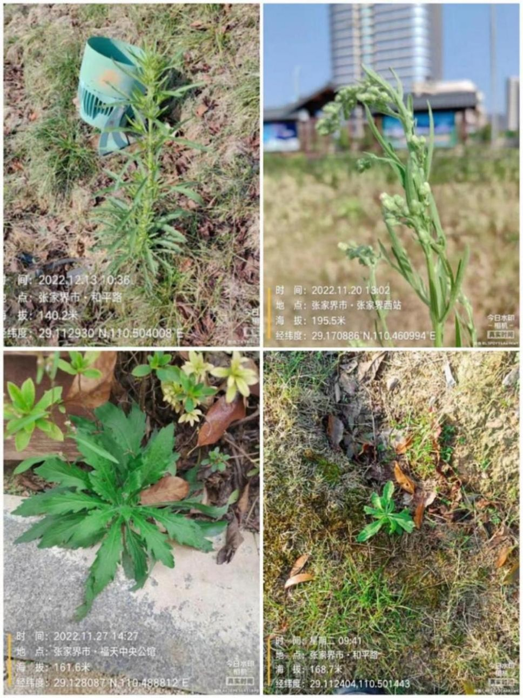 |
苏门白酒草 | Erigeron sumatrensis Retz. | 菊科飞蓬属 | 一二年生草本 | 南美洲 | 热带和亚热带地区分布 | 被子植物 | 根纺锤状，直或弯，具纤维状根，茎被较密灰白色上弯糙短毛，杂有开展的疏柔毛，总苞片背面被糙短毛，瘦果线状披针形，常生长在山坡草地、旷野、路旁。 | 喜光耐旱、适应性强，凭借巨大种子产量、风媒扩散和化感作用，严重危害农田与生态。 | 在新修路和施工的地方以及河沟边，苏门白酒草就会抢先发芽生长，该地植物遭到破坏。 | 西站附属绿地、福天·中央公馆附属绿地、围城路防护绿地、科技大道防护绿地、官黎路防护绿地、高盛澧园附属绿地、市人民政府附属绿地、华天金街防护绿地、南庄坪街道办事处附属绿地、天门中学附属绿地 | 8 |
| 7 | 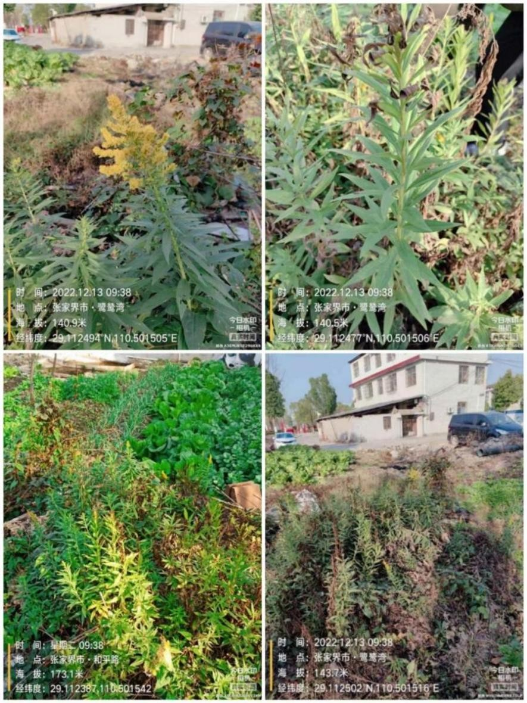 |
加拿大一枝黄花 | Solidago canadensis L. | 菊科一枝黄花属 | 多年生草本 | 北美洲 | 北温带分布 | 被子植物 | 头状花序很小，在花序分枝上单面着生，多数弯曲的花序分枝与单面着生的头状花序，形成开展的圆锥状花序。总苞片线状披针形，边缘舌状花很短。多年生草本植物。茎直立、秆粗壮，下部一般无分枝，常成紫红色。叶片披针形或线状披针形，互生，顶渐尖，基部楔形，近无柄。大多呈三出脉，边缘具锯齿。蝎尾状圆锥花序，具向外伸展的分支。 | 喜光、耐旱、耐贫瘠；偏好开阔、受干扰的环境，也能适应多种土壤 | 加拿大一枝黄花的危害主要表现在对本地生态平衡的破坏和对本地生物多样性的威胁。这是由于加拿大一枝黄花具有强大的竞争优势，体现在：①繁殖能力强，无性有性结合；②传播能力强，远近结合；③生长期长，在其他秋季杂草枯萎或停止生长的时候，加拿大一枝黄花依然茂盛，花黄叶绿，而且地下根茎继续横走，不断蚕食其他杂草的领地，而此时其他杂草已无力与之竞争。加拿大一枝黄花还可以抑制糖槭幼苗生长，也抑制包括自身在内的草本植物发芽。 | 鹭鸶湾防护绿地、迎宾路防护绿地 | 2 |
| 8 | 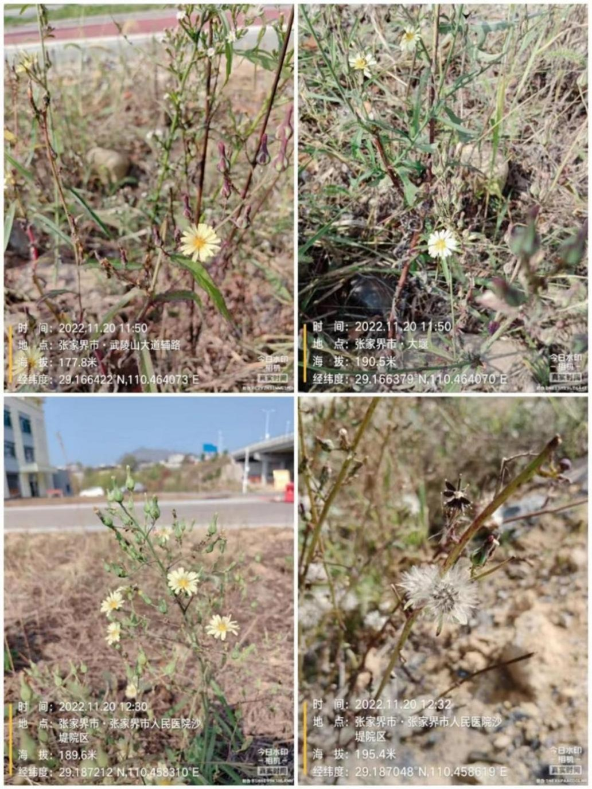 |
翅果菊 | Pterocypsela indica(L.) Shih | 菊科翅果菊属 | 一二年生草本 | 亚洲 | 温带亚洲分布 | 被子植物 | 全部茎枝无毛，全部茎叶线形，全部茎叶顶端长渐急尖或渐尖，基部楔形渐狭，无柄，两面无毛，头状花序果期卵球形，多数沿茎枝顶端排成圆锥花序或总状圆锥花。生长于山谷、山坡、林缘及林下、灌丛中或水沟边、山坡草地或田间。 | 喜温暖湿润、阳光充足的环境，既耐热、耐旱也耐寒 | 无明显入侵危害 | 公安局交通警察支队附属绿地、大堰防护绿地、西站附属绿地、人民医院附属绿地、张家界学院附属绿地 | 5 |
| 9 | 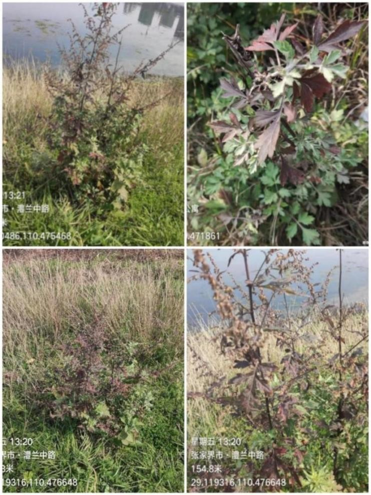 |
豚草 | Ambrosia artemisiifolia L. | 菊科豚草属 | 一年生草本 | 北美洲 | 东亚和北美间断分布 | 被子植物 | 一年生草本，茎直立,上部有圆锥状分枝,有棱,被疏生密糙毛。下部叶对生，具短叶柄，二次羽状分裂，裂片狭小，长圆形至倒披针形，全缘，有明显的中脉，上面深绿色，被细短伏毛或近无毛，背面灰绿色，被密短糙毛；上部叶互生，无柄，羽状分裂。雄头状花序半球形或卵形，具短梗，下垂，在枝端密集成总状花序。总苞宽半球形或碟形；总苞片全部结合，无肋，边缘具波状圆齿，稍被糙伏毛。花托具刚毛状托片；花冠淡黄色，有短管部，上部钟状，有宽裂片；花药卵圆形；花柱不分裂，顶端膨大成画笔状。雌头状花序无花序梗，在雄头花序下面或在下部叶腋单生，或2-3个密集成团伞状，有1个无被能育的雌花，总苞闭合，具结合的总苞片，倒卵形或卵状长圆形，顶端有围裹花柱的圆锥状嘴部，在顶部以下有4-6个尖刺，稍被糙毛；花柱2深裂，丝状，伸出总苞的嘴部。瘦果倒卵形，无毛，藏于坚硬的总苞中。花期8-9月，果期9-10月。 | 适应性强，喜光，耐旱耐瘠，生长迅速，繁殖力强（种子产量大），花粉致敏。 | 其产生的花粉是人类花粉过敏症的主要致病源。豚草的茎和叶释放的化感物质对禾本科、豆科、菊科植物有抑制作用，还具有极强的生命力、竞争力和生态可塑性，破坏本土生物多样性，造成农业减产。 | 市人民政府附属绿地、仙人溪桥防护绿地 | 2 |
| 10 | 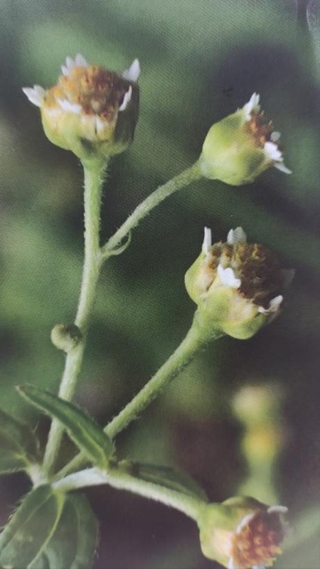 |
牛膝菊 | Galinsoga parviflora Cav. | 菊科牛膝菊属 | 一年生草本 | 南美洲 | 世界分布 | 被子植物 | 一年生草本，茎纤细，或粗壮，基部不分枝或自基部分枝，分枝斜升，全部茎枝被疏散或上部稠密的贴伏短柔毛和少量腺毛，茎基部和中部花期脱毛或稀毛。叶对生，卵形或长椭圆状卵形，基部圆形、宽或狭楔形，顶端渐尖或钝，基出三脉或不明显五出脉，在叶下面稍突起，在上面平，有叶柄，向上及花序下部的叶渐小，通常披针形；全部茎叶两面粗涩，被白色稀疏贴伏的短柔毛，沿脉和叶柄上的毛较密，边缘浅或钝锯齿或波状浅锯齿，在花序下部的叶有时全缘或近全缘。头状花序半球形，有长花梗，多数在茎枝顶端排成疏松的伞房花序，总苞半球形或宽钟状，外层短，内层卵形或卵圆形，顶端圆钝，白色，膜质。舌状花4-5个，舌片白色，顶端3齿裂，筒部细管状，外面被稠密白色短柔毛；管状花花冠黄色，下部被稠密的白色短柔毛。托片倒披针形或长倒披针形，纸质，顶端3裂或不裂或侧裂。 | 喜潮湿、肥沃土壤，耐阴，种子产量大，生长迅速，常入侵农田、菜园等。 | 牛膝菊属植物通常危害小麦、玉米、棉花、烟草等作物，这种植物最重要的特征是，种子没有体眠或体眠程度低，生长迅速，开花早，同一生长季节可发生多代，种子量大，适生环境广泛。在适应的环境条件下，牛膝菊营养生长迅速，使其成为农田中的一种恶性杂草。这些特征使牛膝菊很易扩散，并建立大的杂草种群，以至于很难防治。牛膝菊会与作物，尤其是与灌溉的矮杆作物竞争营养和生态位，甚至影响作物收成。牛膝菊对大豆和花生也具有一定的化感作用，影响种子的萌发和胚根的伸长。并且牛膝菊的化感作用地上部分比地下部分要强，但其化感能力却受低温环境的影响。 | 大榕溪防护绿地等 | 21 |
| 11 | 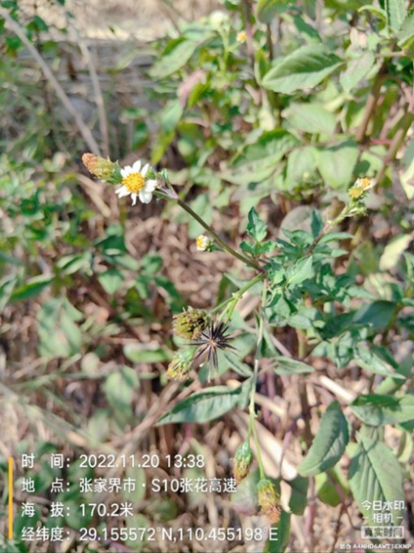 |
白花鬼针草 | Bidens alba (L.) DC.Bidens alba (L.) DC. | 菊科鬼针草属 | 一年生草本 | 亚洲 | 热带亚洲和热带美洲间断分布 | 被子植物 | 茎钝四棱形，无毛或上部被极稀的柔毛，茎钝四棱形，无毛或上部被极稀的柔毛。头状花序，层托片披针形，内层条状披针形，舌状花，瘦果黑色，条形，具倒刺毛。生于村旁、路边及临野。 | 喜温暖湿润，耐旱耐瘠，依靠具倒刺的瘦果进行动物传播和快速繁殖 | 无严重入侵危害 | 兑泽路防护绿地、101乡道防护绿地、武陵山大道防护绿地、吉大安置小区附属绿地 | 5 |
| 12 | 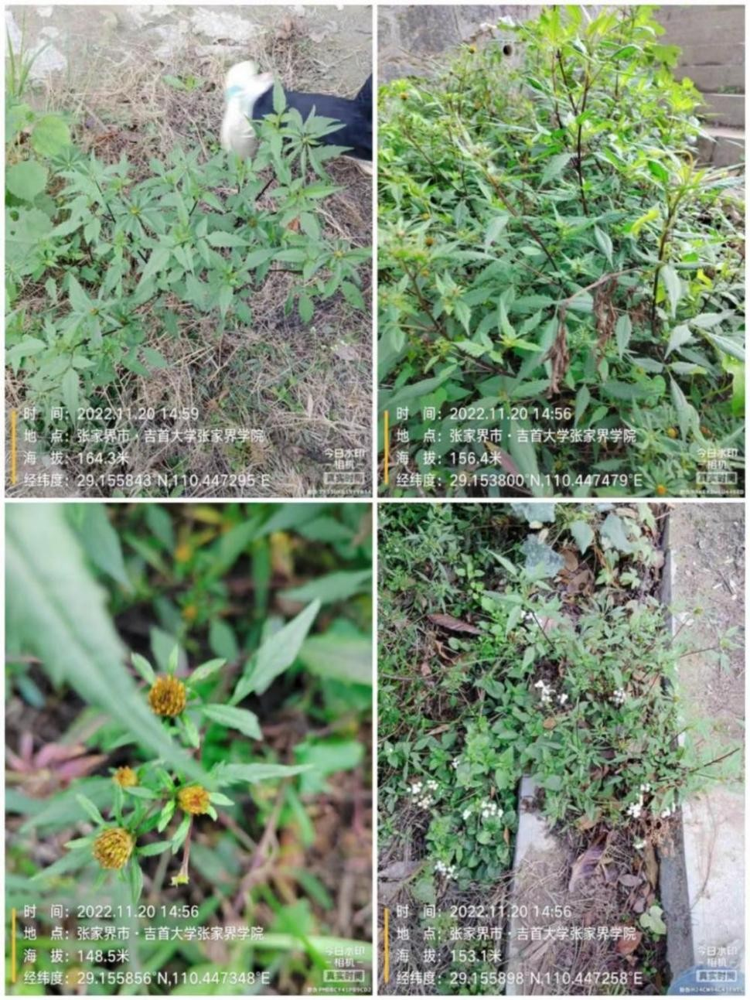 |
大狼耙草 | Bidens frondosa L. | 菊科鬼针草属 | 一年生草本 | 美洲 | 热带亚洲和热带美洲间断分布 | 被子植物 | 叶对生，一回羽状复叶，具柄，叶背面有稀疏短柔毛，头状花序单生茎端和枝端，瘦果扁平。适应性强，山坡、山谷、溪边、草丛及路旁均可生，喜温暖潮湿环境。生于水边湿地、沟渠及浅水滩，亦生于路边荒野，常发生在稻田边。到处都能生长，不耐荫，在密植田或高秆作物中生长发育不好。 | 喜温暖潮湿环境，通过倒刺芒刺高效传播种子，被列为1级恶意入侵物种 | 与农物争夺水分、养分和光能。是作物病害和虫害的中间寄主，降低农作物产量和品质，影响人、畜健康，增加管理用工和生产成本。 | 热水坑社区服务中心附属绿地、太极溪特大桥防护绿地、张家界学院附属绿地、武陵山大道防护绿地、龙源华城附属绿地、大榕溪防护绿地、张家界金海学校附属绿地、逸臣公园附属绿地、大庸桥公园绿地、荣盛华府附属绿地。 | 3 |
| 13 | 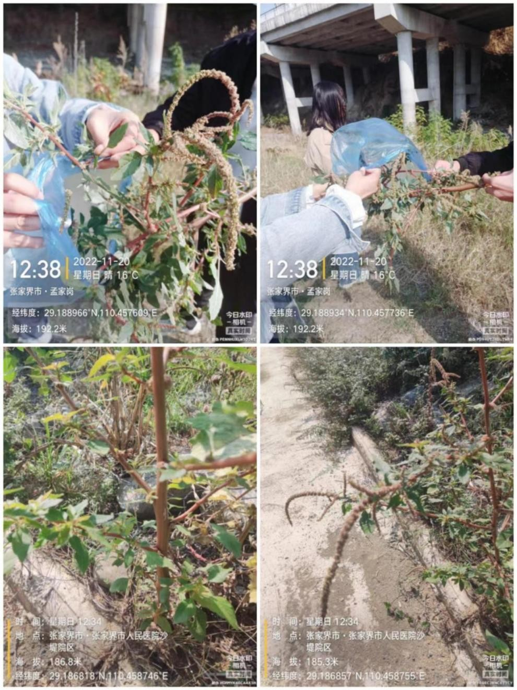 |
刺苋 | Amaranthus spinosus L. | 苋科苋属 | 一年生草本 | 美洲 | 世界分布 | 被子植物 | 叶片菱状卵形或卵状披针形，圆锥花序腋生及顶生，生长在旷地、园圃、农耕地等。刺苋叶腋有刺，且部分苞片变形成刺，极易和该属其他种区别。 | 喜温暖、耐旱耐瘠，凭借极强的适应性和惊人的种子产量，成为果园、旱地等生境中的优势杂草。 | 常大量孳生危害旱作农田、蔬菜地及果园，严重消耗土壤肥力，成熟植株有刺因而清除比较困难，并伤害人畜。 | 人民医院附属绿地、张家界学院附属绿地、大榕溪防护绿地、逸臣公园附属绿地、大庸桥公园绿地、阳湖坪路防护绿地、陈家溪桥防护绿地 | 8 |
| 14 | 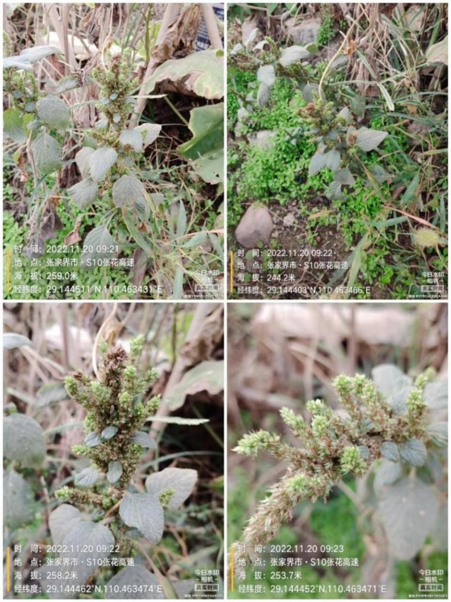 |
反枝苋 | Amaranthus retroflexus L. | 苋科苋属 | 一年生草本 | 美洲 | 世界分布 | 被子植物 | 茎，密生短柔毛，叶片菱状卵形或椭圆状卵形，全缘或波状缘，两面及边缘有柔毛，下面毛较密。圆锥花序顶生及腋生。胞果扁卵形。生在田园内、农地旁、人家附近的草地上，有时生在瓦房上。 | 喜温暖，耐旱，耐瘠薄，繁殖力强，种子产量高，是旱地恶性杂草。 | 危害农作物，反枝苋主要危害棉花、豆类、花生、蔬菜等多种旱作物。反枝苋混生在大豆、小麦、等果园和菜园中，可严密遮光和阻碍通风，消耗大量地力，抑制作物生长。还常常污染作物种子。反枝苋也是许多昆虫、线虫、病毒、细菌和真菌的寄主。危害家畜 | 热水坑社区服务中心附属绿地、太极溪特大桥防护绿地、人民医院附属绿地、张家界学院附属绿地、大榕溪防护绿地、张家界金海学校附属绿地、逸臣公园附属绿地、荣盛华府附属绿地、滨河路沿线防护绿地、阳湖坪路防护绿地 | 9 |
| 15 | 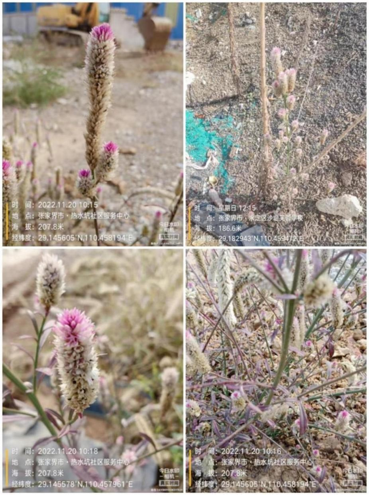 |
青葙 | Celosia argentea L. | 苋科青葙属 | 一年生草本 | 非洲 | 热带亚洲至热带非洲分布 | 被子植物 | 叶片绿色常带红色，顶端急尖或渐尖，具小芒尖，基部渐狭，花多数，密生，在茎端或枝端成单一、无分枝的塔状或圆柱状穗状花序，苞片及小苞片披针形顶端渐尖，延长成细芒，胞果卵形，种子凸透镜状肾形，种子呈扁圆形，少数呈圆肾形，表面黑色或红黑色，光亮，中间微隆起，侧边微凹处有种脐。表面于放大镜下观察可见网状纹理种子易粘手，种皮薄而脆，气无，味淡。喜生于石灰性土壤和肥沃的砂壤土，在粘性土壤中也能生长，在低洼积水的地方容易烂根。 | 喜光，耐旱，耐瘠薄，适应性强，种子繁殖力强。 | 无明显入侵危害 | 热水坑社区服务中心附属绿地，太极溪特大桥防护绿地，市公安局交通警察大队附属绿地，沙堤大道防护绿地，张家界金海学校附属绿地、张家界学院附属绿地，逸臣公园附属绿地，兑泽路防护绿地 | 12 |
| 16 | 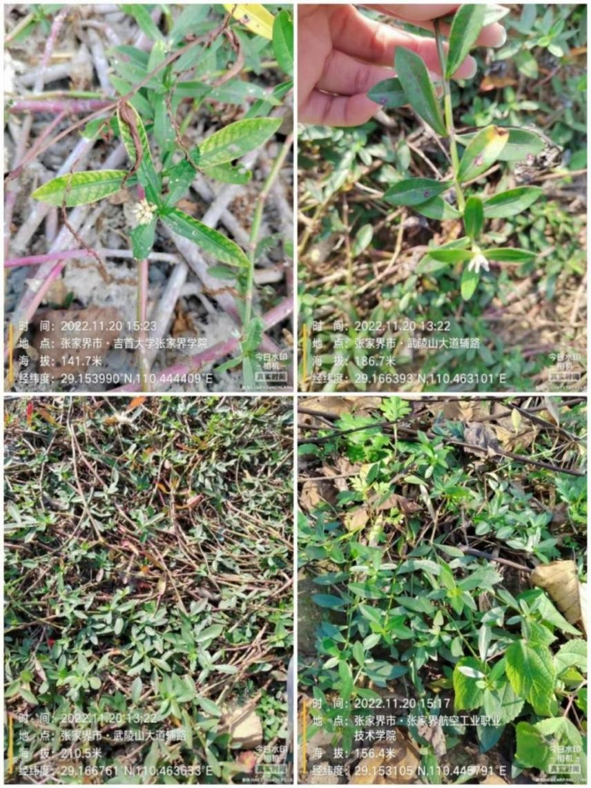 |
空心莲子草 | Alternanthera philoxeroides (Mart.) Griseb. | 苋科莲子草属 | 多年生草本 | 美洲 | 世界温带分布 | 被子植物 | 茎基部匍匐，上部上升，管状，幼茎及叶腋有白色或锈色柔毛，茎老时无毛，叶片矩圆形、矩圆状倒卵形或倒卵状披针形，两面无毛或上面有贴生毛及缘毛，下面有颗粒状突起，花密生，成具总花梗的头状花序，果实未见。生长在池沼、水沟内。 | 适应性强，喜湿耐阴，但也能在旱地生长，繁殖能力强 | 在新环境里繁殖蔓延，与当地种竞争生长所需资源使本地种的生长受到胁迫，导致群落的生存空间降低。空心莲子草入侵某群落后，通常会形成大小不等的斑块状群落镶嵌体，随入侵时间的增加，它又会通过快速的分枝使盖度不断增加。 | 张家界学院附属绿地、大榕溪防护绿地、逸臣公园附属绿地、大庸桥公园绿地、荣盛华府附属绿地、滨河路沿线防护绿地、大庸古城附属绿地、福天·中央公馆附属绿地、黄沙泉水库附属绿地、101乡道防护绿地、张家界市人民政府附属绿地、迎宾路防护绿地、致远教育附属绿地、小红帽民宿附属绿地、南庄坪街道办事处附属绿地、民怡家园附属绿地、三邢路防护绿地 | 22 |
| 17 | 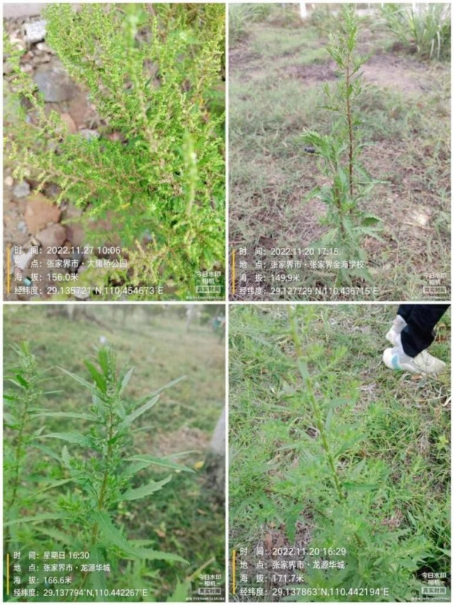 |
土荆芥 | Dysphania ambrosioides (L.) Mosyakin & Clemants | 苋科腺毛藜属 | 一年生或多年生草本 | 美洲 | 世界分布 | 被子植物 | 一年生或多年生草本，有强烈香味。茎直立，多分枝，有色条及钝条棱；枝通常细瘦，有短柔毛并兼有具节的长柔毛，有时近于无毛。叶片矩圆状披针形至披针形，先端急尖或渐尖，边缘具稀疏不整齐的大锯齿，基部渐狭具短柄，上面平滑无毛，下面有散生油点并沿叶脉稍有毛，上部叶逐渐狭小而近全缘。花两性及雌性，生于上部叶腋；果时通常闭合；雄蕊5，花药长0.5毫米；花柱不明显，柱头通常3,较少为4，丝形，伸出花被外。胞果扁球形，完全包于花被内。种子横生或斜生，黑色或暗红色，平滑，有光泽，边缘钝，花期和果期的时间都很长。 | 喜光、耐旱、适应性强，具有化感作用，种子繁殖能力强。 | 种群数量大，对生长环境要求不严，极易扩散，常常侵入并威胁种植在长江大堤上的草坪。含有毒的挥发油，对其他植物产生化感作用。也是花粉过敏源，对人体健康有害。土荆芥通过化感作用在不同程度上抑制它们种子的萌发，从而改变它们的种植密度，浪费率土地的利用率；对根长和茎高的抑制将导致植株的产量降低，最终导致农作物减产。 | 兑泽路防护绿地、陈家溪桥防护绿地、逸臣公园附属绿地、张家界金海学校附属绿地、龙源华城附属绿地 | 12 |
| 18 | 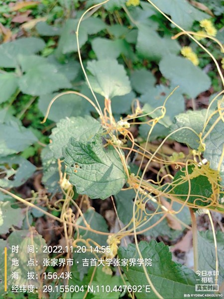 |
菟丝子 | Cuscuta Chinensis Lam. | 旋花科菟丝子属 | 一年生草本 | 亚洲 | 热带亚洲至热带大洋洲分布 | 被子植物 | 茎缠绕，黄色，纤细，花序侧生，少花或多花簇生成小伞形或小团伞花序，鳞片长圆形，边缘长流苏状，蒴果球形，表面粗糙。 | 寄生植物，依靠吸器缠绕寄主获取养分，适应性强，种子休眠期长；对寄主有选择性，喜光，种子可存活多年。 | 园林植物受其寄生危害，轻则影响植物生长和观赏效果，重则致植物死亡。 | 大榕溪防护绿地、张家界学院附属绿地 | 2 |
| 19 | 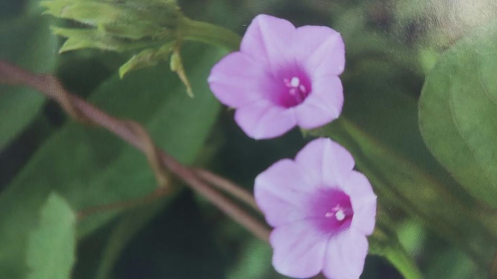 |
三裂叶薯 | Ipomoea triloba L. | 旋花科虎掌藤属 | 一年生草本 | 美洲 | 泛热带分布 | 被子植物 | 茎缠绕或有时平卧，无毛或散生毛，且主要在节上。叶宽卵形至圆形，全缘或有粗齿或深3裂，基部心形，两面无毛或散生疏柔毛；叶柄无毛或有时有小疣。花序腋生，花序梗短于或长于叶柄，较叶柄粗壮，无毛，明显有棱角，顶端具小疣，花梗多少具棱，有小瘤突，无毛，苞片小，披针状长圆形；萼片近相等或稍不等，外萼片稍短或近等长，长圆形，钝或锐尖，背部散生疏柔毛，边缘明显有缘毛，内萼片有时稍宽，椭圆状长圆形，锐尖，具小短尖头，无毛或散生毛；花冠漏斗状，无毛，淡红色或淡紫红色，雄蕊内藏，花丝基部有毛；子房有毛。蒴果近球形，具花柱基形成的细尖，被细刚毛，2室，4瓣裂。种子4或较少，无毛。 | 喜光喜湿、适应性极强，凭借缠绕攀附的快速生长和大量种子繁殖，成为一种危害生态的入侵植物 | 危害方式主要为排挤和覆盖，其次为缠绕、生化相克、寄生及致敏，约有3/4的有害植物(直立的草本植物)以排挤方式进行危害，即以大量快速的繁殖方式形成密集的种群，侵占地盘，将其他植物驱赶、排挤出生境甚至杀灭掉。 | 人民医院附属绿地、张家界学院附属绿地 | 2 |
| 20 | 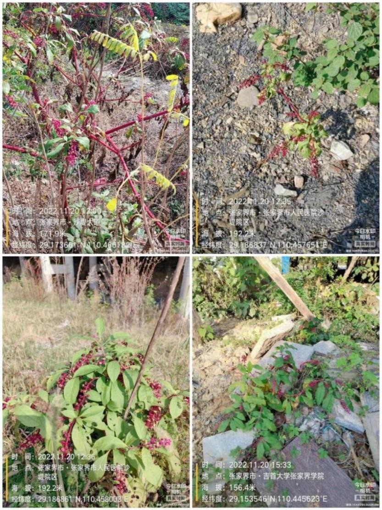 |
垂序商陆 | Phytolacca americana L. | 商陆科商陆属 | 多年生草本 | 北美洲 | 东亚和北美间断分布 | 被子植物 | 根粗壮，肥大，倒圆锥形。茎直立，圆柱形，有时带紫红色。叶片椭圆状卵形或卵状披针形，顶端急尖，基部楔形；总状花序顶生或侧生，花白色，微带红晕，花被片5，雄蕊、心皮及花柱通常均为10，心皮合生。果序下垂；浆果扁球形，熟时紫黑色；种子肾圆形，直径约3毫米。花期6~8月， | 喜温暖湿润，具有强大的无性繁殖和鸟类传播种子的能力，成为一级恶性入侵物种 | 对环境要求不严格，生长迅速，在营养条件较好时，易形成单优群落，与其他植物竞争养料。其茎具有一定的蔓性，叶片宽阔，能覆盖其他植物体，导致其他植物生长不良甚至死亡。还具有较为肥大的肉质直根，消耗土壤肥力，根及浆果对人和牲畜有毒害作用。 | 人民医院附属绿地、沙堤大道防护绿地、市公安局交通警察支队附属绿地、武陵山大道防护绿地、张家界金海学校附属绿地、张家界学院附属绿地、热水坑社区服务中心附属绿地、吉大安置小区附属绿地、福天·中央公馆附属绿地、逸臣桃源附属绿地 | 1 |
| 21 | 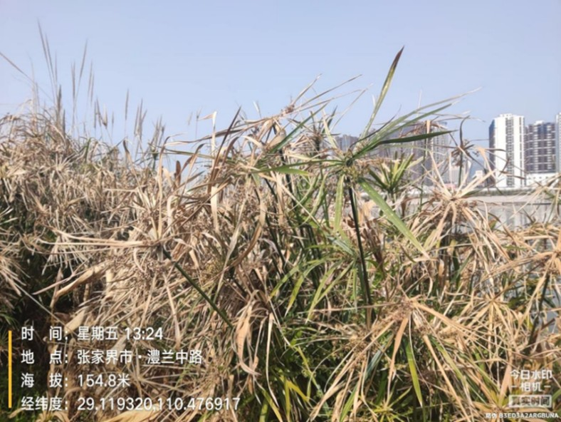 |
风车草 | Cyperus involucratus Rottboll | 莎草科莎草属 | 多年生草本 | 非洲 | 世界分布 | 被子植物 | 多年生草本，根状茎短，粗大，须根坚硬。秆稍粗壮，近圆柱状，上部稍粗糙，基部包裹以无叶的鞘，鞘棕色。叶顶生为伞状。 苞片20枚，长几相等，向四周展开，平展；多次复出长侧枝聚伞花序具多数第一次辐射枝，小穗密集于第二次辐射枝上端，椭圆形或长圆状披针形，小穗轴不具翅；鳞片紧密的复瓦状排列，膜质，卵形，顶端渐尖，苍白色，具锈色斑点，或为黄褐色，具3-5条脉；雄蕊3，花药线形，顶端具刚毛状附属物；花柱短，柱头3。小坚果椭圆形，近于三棱形，长为鳞片的1/3，褐色。 花两性，花果期8-11月。 | 喜温暖湿润、阳光充足，也耐半阴甚耐寒，对土壤要求不严，常依水生于沼泽、河岸等湿地环境 | 无明显入侵危害 | 市人民政府附属绿地、西站附属绿地 | 1 |
| 22 | 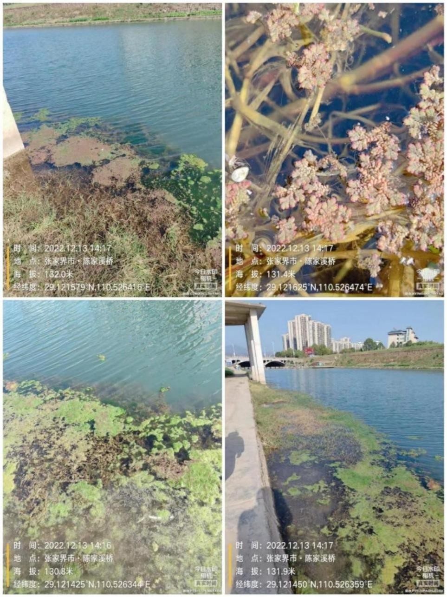 |
满江红 | Azolla pinnata subsp. asiatica R. M. K. Saunders & K. Fowler | 槐叶蘋科满江红属 | 一年生草本 | 亚洲 | 中国特有/泛热带分布 | 蕨类植物 | 植物体呈卵形或三角状，根状茎细长横走，侧枝腋生，假二歧分枝，向下生须根。叶小如芝麻，互生，无柄，覆瓦状排列成两行，叶片深裂分为背裂片和腹裂片两部份，背裂片长圆形或卵形，肉质，绿色，但在秋后常变为紫红色。孢子果双生于分枝处，大孢子果体积小；小孢子果体积远较大，球圆形或桃形，顶端有短喙，果壁薄而透明，内含多数具长柄的小孢子囊，每个小孢子囊内有64个小孢子，分别埋藏在5-8块无色海绵状的泡胶块上，泡胶块上有丝状毛。 | 喜温暖、光照充足、静水环境，繁殖迅速；与固氮蓝藻共生，繁殖快成优势水面漂浮植物。 | 繁殖速度快，掠夺了其它水生动植物的空间 | 天门中学附属绿地、陈家溪桥防护绿地 | 1 |
| 23 | 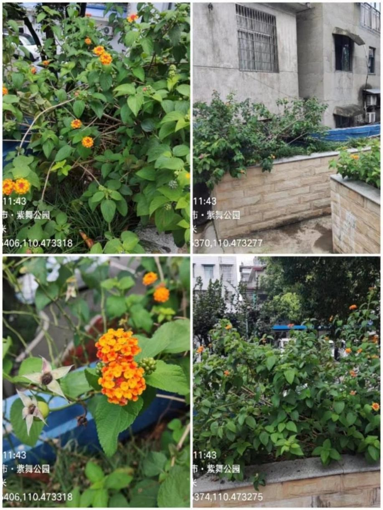 |
马缨丹 | Lantana camara L. | 马鞭草科马鞭草属 | 灌木或蔓生灌木 | 美洲 | 泛热带分布 | 被子植物 | 灌木；高可达2米；茎枝常被倒钩状皮刺；叶卵形或卵状长圆形，长3-8.5厘米，先端尖或渐尖，基部心形或楔形，具钝齿，上面具触纹及短柔毛，下面被硬毛，侧脉约5对；叶柄长约1厘米；花序径1.5-2.5厘米，花序梗粗，长于叶柄；苞片披针形；花萼管状，具短齿；花冠黄或橙黄色，花后深红色；果球形，径约4毫米，紫黑色。 | 喜光，耐旱，适应性强，繁殖力强，种子和营养繁殖，有化感作用，对多种土壤和气候适应。 | 马缨丹的生活力和适应性极强。其种子可因鸟类，猴类和羊群摄食果实，通过空投或排粪而迅速传播。同时，其全株或残体可产生强烈的植物间抑制或异株克生物质。因此，马缨丹已成为侵犯牧场、林场、茶园和桔园的恶性杂“草”，也严重破坏了森林资源和环境生态系统。马缨丹也是农场、牧场和林场中鼠类、野猪和有害昆虫采采蝇等的藏身之处。 | 紫舞公园绿地等 | 2 |
| 24 | 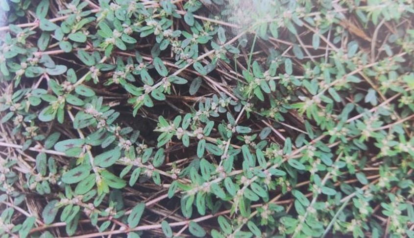 |
班地锦草 | Euphorbia maculata L. | 大戟科大戟属 | 一年生草本 | 美洲 | 东亚和北美间断分布 | 被子植物 | 一年生草本。根纤细，茎匍匐，被白色疏柔毛。叶对生，长椭圆形至肾状长圆形，先端钝，基部偏斜，不对称，略呈渐圆形，边缘中部以下全缘，中部以上常具细小疏锯齿；叶面绿色，中部常具有一个长圆形的紫色斑点，叶背淡绿色或灰绿色，新鲜时可见紫色斑，干时不清楚，两面无毛；叶柄极短，托叶钻状，不分裂，边缘具睫毛。花序单生于叶腋，基部具短柄，总苞狭杯状，外部具白色疏柔毛，边缘5裂，裂片三角状圆形；腺体4，黄绿色，横椭圆形，边缘具白色附属物。雄花4-5，微伸出总苞外；雌花1，子房柄伸出总苞外，且被柔毛；子房被疏柔毛；花柱短，近基部合生；柱头2裂。蒴果三角状卵形，被稀疏柔毛，成熟时易分裂为3个分果爿。种子卵状四棱形，灰色或灰棕色，每个棱面具5个横沟，无种阜。花果期4-9月。 | 喜光耐旱、适应性强，凭借大量种子繁殖和化感作用成为农田、草坪及荒地常见杂草 | 斑地锦草入侵草坪，与草坪争水、肥等。作为外来入侵种，斑地锦草生态适应能力强，耗费水、肥能力强。侵占空间，影响草坪光合作用。斑地锦草产生的种子数量远远高于草坪草的播种量，其生长速度也远高于草坪草的生长速度，匍匐茎发达，覆盖在草坪草的表面，影响其光合作用，很容易形成草荒，毁掉草坪。 | 太极溪特大桥防护绿地等 | 1 |
| 25 | 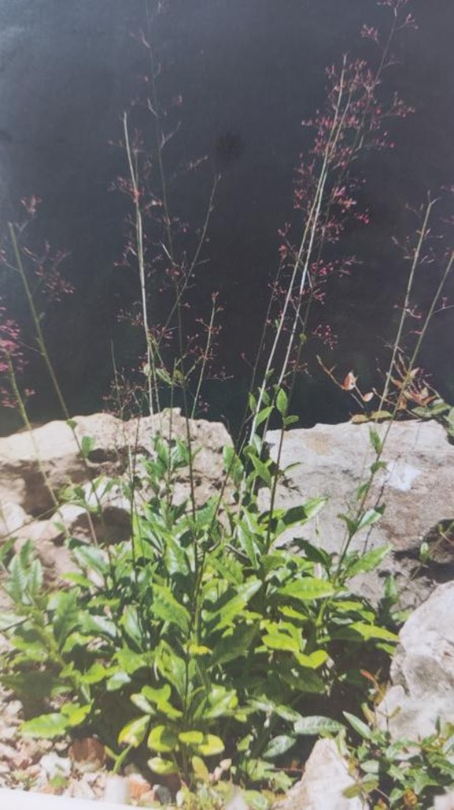 |
土人参 | Talinum paniculatum (Jacq.) Gaertn. | 土人参科土人参属 | 一年生或多年生草本 | 美洲 | 热带亚洲和热带美洲间断分布 | 被子植物 | 全株无毛，主根粗壮，圆锥形，有少数分枝，皮黑褐色，断面乳白色。茎直立，肉质，基部近木质，多少分枝，圆柱形，有时具槽。叶互生或近对生，具短柄或近无柄，叶片稍肉质，倒卵形或倒卵状长椭圆形，顶端急尖，有时微凹，具短尖头，基部狭楔形，全缘。圆锥花序顶生或腋生，较大形，常二叉状分枝，具长花序梗；花小，总苞片绿色或近红色，圆形，顶端圆钝，苞片2，膜质，披针形，顶端急尖，萼片卵形，紫红色，早落；花瓣粉红色或淡紫红色，长椭圆形、倒卵形或椭圆形，顶端圆钝，稀微凹；雄蕊 (10-) 15-20，比花瓣短；花柱线形，基部具关节；柱头3裂，稍开展；子房卵球形，蒴果近球形，3瓣裂，坚纸质；种子多数，扁圆形，直径约1毫米，黑褐色或黑色，有光泽。花期6-8月，果期9-11月。 | 喜温暖湿润，耐旱耐瘠，适应性强，种子繁殖，常生于村旁、山坡、荒地等。 | 土人参若管理不当会发生根腐病和茎腐病等病害，偶尔会有斜纹夜蛾危害叶片。 | 永昌路防护绿地等 | 1 |